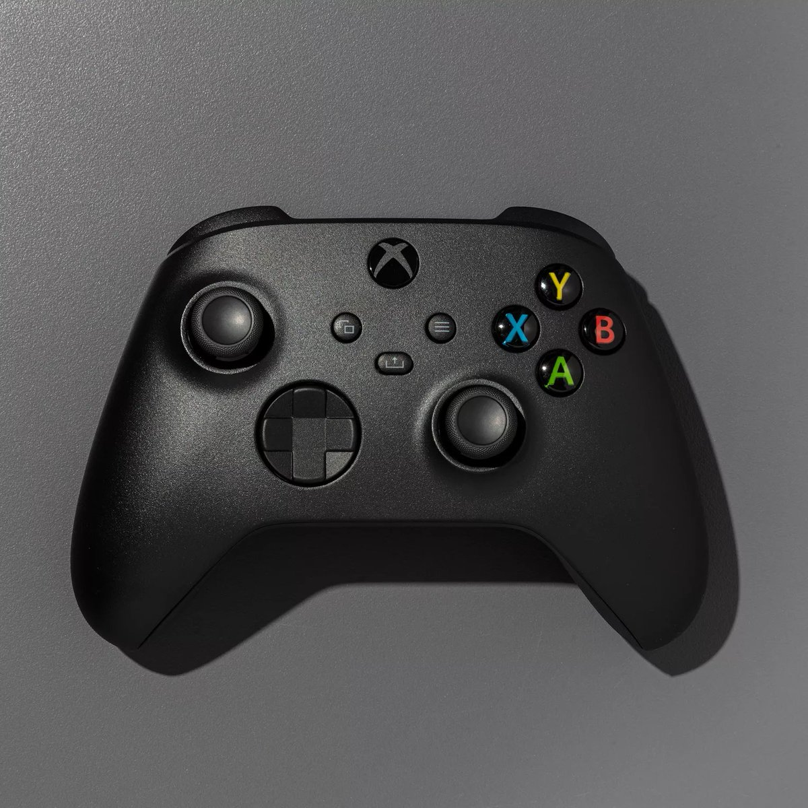
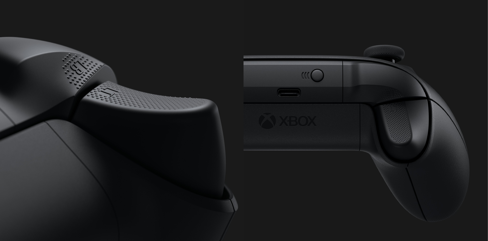
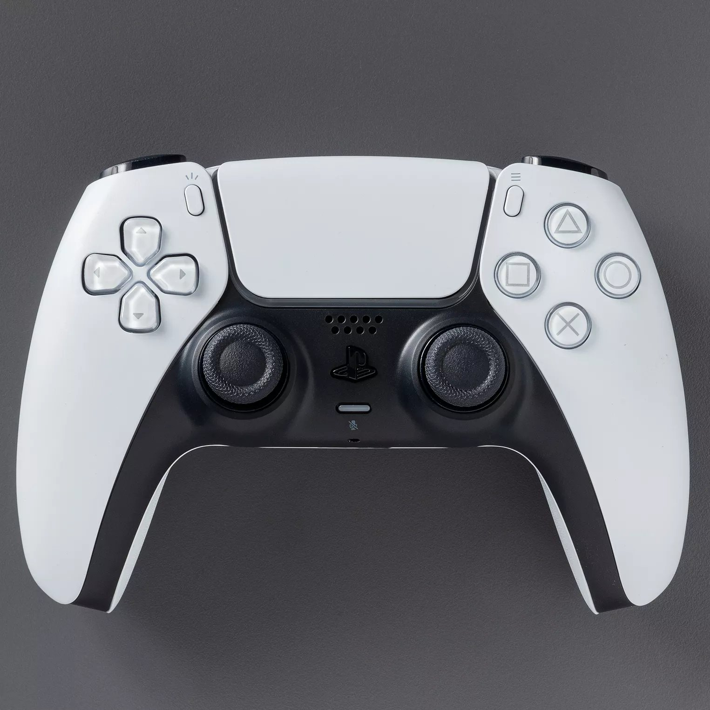
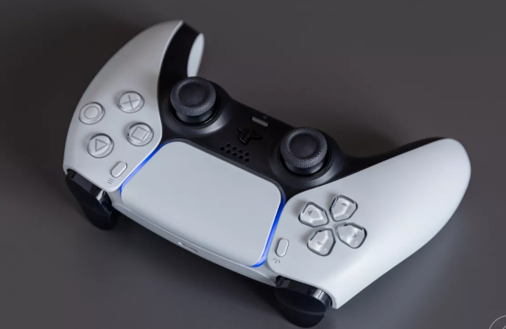

CONTROLLER
 
Controllers are often one of the aspects that frequently get overlooked, but I think that they are equally as important as controllers are the one we interact with the most when using the console, and as for the controller for the Xbox Series-X, it is no exception for being one of the best controllers ever made. The general look and design takes almost every element from the generation before it and added a few tweaks here and there.
They still have the good built quality and sturdy feeling like they were known for before, but unfortunately still use non-rechargeable double A batteries which need to be swapped out if they run out. I still don’t know why they didn’t just make the controller rechargeable like the PlayStations have been for the past several years instead of just sticking to their old roots, but I guess that you have to make some compromises for this one.
Microsoft’s approach here is obvious as they went for the “if it ain’t broke, don’t fix it” kind of way which is still pretty good. The Series-X controller is very comfortable and ergonomic to the hand with nice and tactile buttons. Although, they do lack any variation and innovation. Nevertheless, a solid controller overall.
 
On the other side of the spectrum, the PS5 controller which was given the name DualSense controller, is a major leap in technological advancement from the DualSchock 4 (PS4 controller). First of all, the basic shape and feel of the device has changed drastically. It is bigger, heavier and packs way more features than you could ever imagine. Design has also taken a different approach in which makes it fit the futuristic theme that the company was initially going for.
Another new addition in this generation is the adaptive triggers. Essentially, one can feel various degrees of resistance in the triggers when playing a game. For example, the triggers get hard to push when playing a driving game as if it would mimic a pedal of a car in real life. They also improved on the haptics of the controllers, which are the vibrations and rumbles. The motors in the DualSense is on a whole other level as you could feel every and differentiate every bit of sensation depending on what you are doing in game.
These improvements add to the realism and immersion when playing a game and I believe that it makes it head and shoulders better than the Xbox controller as you simply don’t get any of those features there.